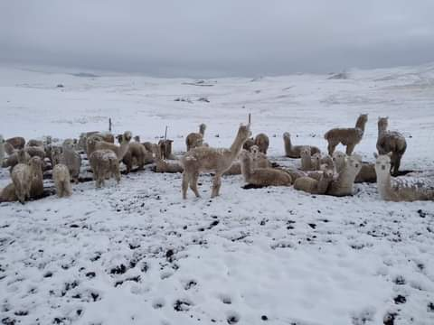
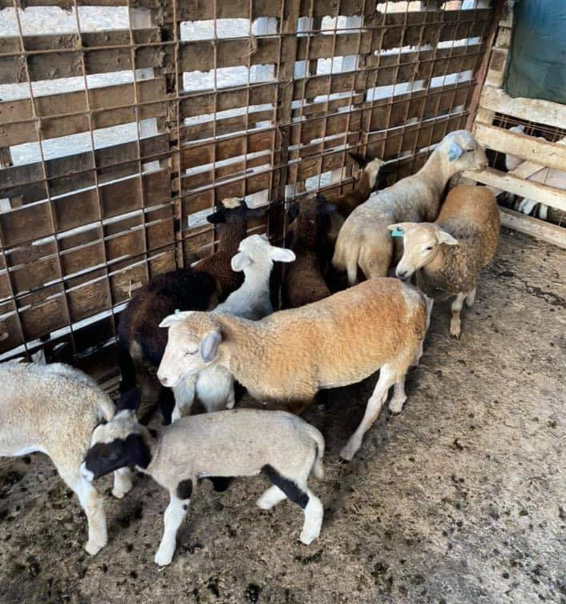
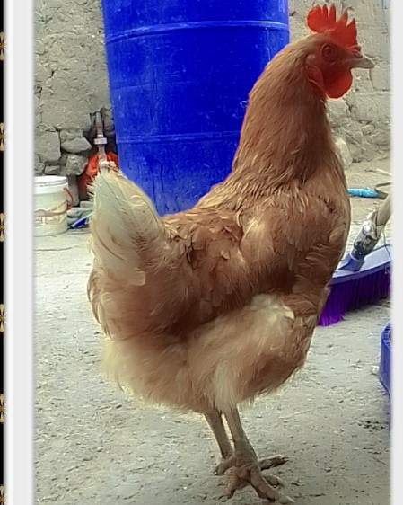
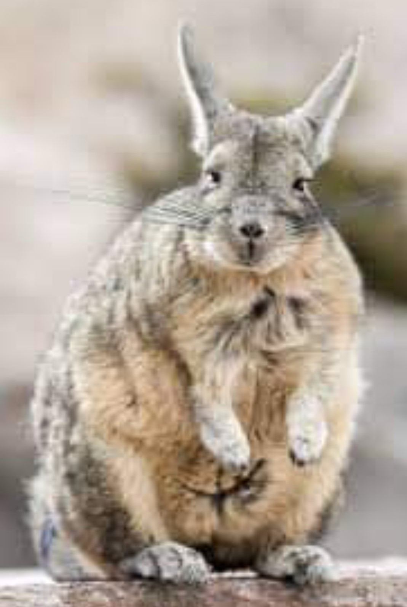
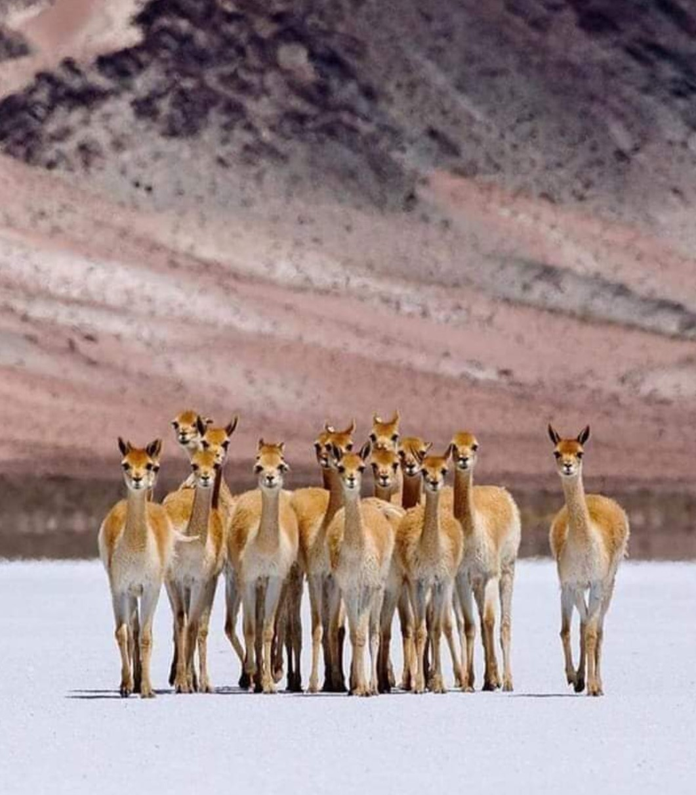
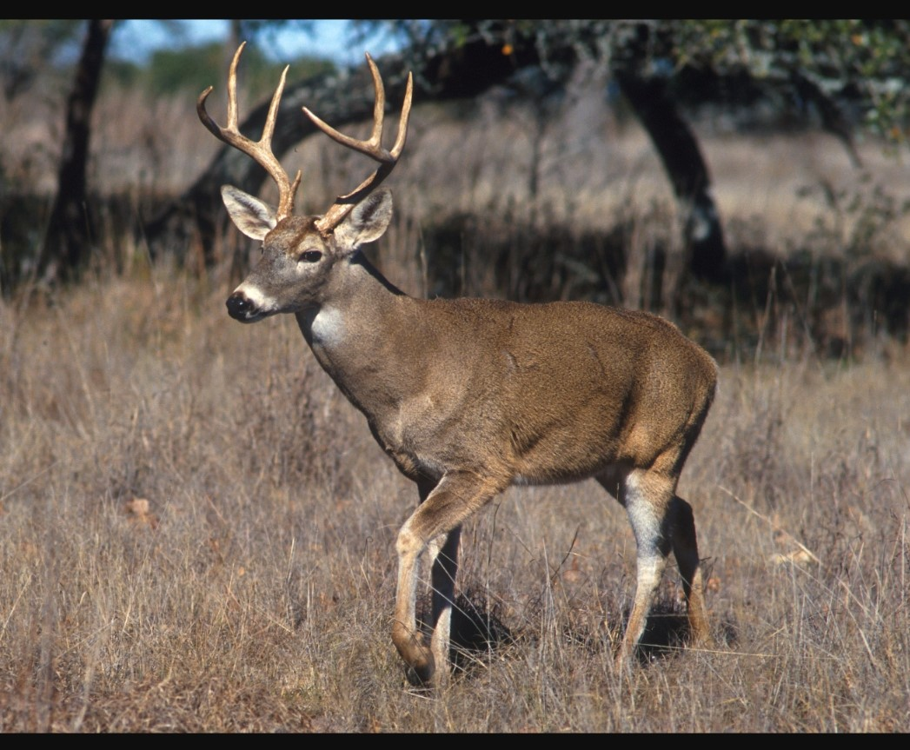

"LA OVEJA DE SAN ANTONIO"
Las ovejas tienen una excelente vicion tanto en blanco y negro ,como a color.No obstante en espacios sin mucha claridad no se defendien bien, lo siempre tienen a evitar areas oscuras y que no les permita valorar los cambios del terreno .Igualmente cuentan con excelente olfato y una buena audicion LAS OVEJAS viven en zons montañosas aisladas , y pasan la mayor parte de sus vidas pastoreando en los distintos paisajes que conforman su abitad. la carne de oveja se vende escasamente porque no ay muchos compradores de esa carne pero el chicharron de oveja es deliciosa por eso las personas del pueblo lo consumen mas .

"LA GALLINA PONEDORA"
Las gallinas ponedoras tienen la capacidad genetica para producir un gran numero de huevos, con promedio y pueden lograr buen peso del huevos las gallinas podran llegar a los 300 anuales, asi uno al dia .Miemtras que las camperas se moveran entre 200 y 250 huevos al año.Es decir, no aceguran un huevo diario las gallinas de raza ponen 100-150 huevos cada año la mayoria de las gallinas comienzan a poner a los 4 meses de edad, pero algunas les puede tomar asta un año.Las gallinas ponedoras producen huevo asta los 6 años de edad y luego la reproduccion de huevos se redusira a uno o dos huevos a la semana astaa que la henbra alcanza su adolescencia.

"LA VIZCACHA DELA MONTAÑA"ANIMAL SALVAJE"
La vizcacha reprecenta, es decir, el estado de animo de muvhas personas atraviezan tras el final de las vacaciones. Se trata de un pequeño roedor,que nos puede a una liebre, que avita principalmente en las iglesias antiguas. Esla existencia de un manifero en exstincion que por generaciones a permanecido oculto en las paredes verticales de la iglesia , se estima que vive 7 u 8 años, situacion poblacional:espesie abumdante y sin de problemas de conservacoin en la mayor parte de su distribucion.

"LA VICUÑA DE CABALLUNI"
Las vicuñas tienen las patas largas y delgadas, terminadas en almohadillas, aptas para caminar para caminar sobre varios tipos de suelos incluso pedregosos. La fibra de su lana esta entre las mas finas del mundo, midiendo 15um (micrometros) de diametro. el pelaje es denso fibras delgadas. Las vicuñas son territoriales y su organizacion social se vaa en grupos familiares y grupos de animales solteros cuya distribucion es muy variable. estas familias ocupan territorios bastante fijos donde tienen revolcaderos en los que empolban su particula.

"LA TARUCA ANIMAL SALVAJE"
El venado andino de un tamaño mediano mide menos de un metro de altura y tiene un peso de 45 a 65 kg las hembras son de menor tamaño de los muchos su cuerpo es de color gris u marron amarillento lo que le permite camuflarse entre la vegetacion seca.